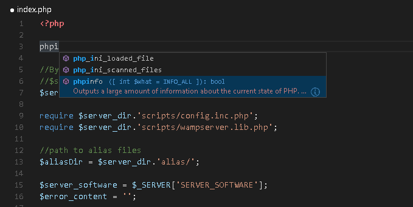
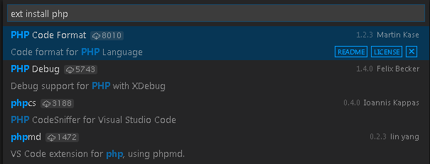

VS Code中的PHP编程 PHP Programming in VS Code
对于PHP开发来说，Visual Studio Code是一个非常不错的编辑器。你可以体验到诸如语法高亮和括号匹配、代码提示以及snippet等特性。不仅如此，你还可以通过VS Code的社区获得更多功能性的扩展。
Visual Studio Code is a great editor for PHP development. You get features like syntax highlighting and bracket matching, IntelliSense, and snippets out of the box and you can add more functionality through community created VS Code extensions.

代码片段 Snippets
Visual Studio Code为PHP提供了一套通用的snippet集合。你只需要输入 kb(editor.action.triggerSuggest) 就可以得到与之上下文环境匹配的列表。
Visual Studio Code includes a set of common snippets for PHP. To access these, hit kb(editor.action.triggerSuggest) to get a context specific list.

检查 Linting
VS Code使用PHP官方的linter(php -l)来进行PHP语言的诊断。这意味着VS Code可以自动同步PHP官方Linter的更新。
VS Code uses the official PHP linter (php -l) for PHP language diagnostics. This allows VS Code to stay current with PHP linter improvements.
这里提供了三条配置项来配置PHP linter:
There are three settings to control the PHP linter:
php.validate.enable: 用于配置是否启用PHP linting功能。默认是启用的（Enabled）。php.validate.enable: controls whether to enable PHP linting at all. Enabled by default.php.validate.executablePath: 磁盘上的PHP可执行路径。如果PHP可执行路径不在系统路径上，则要自己手动配置该项。php.validate.executablePath: points to the PHP executable on disk. Set this if the PHP executable is not on the system path.php.validate.run: 用于配置linter的功能是通过“保存”(value:"onSave")触发还是“输入”(value:"onType")触发。默认是“保存”触发。php.validate.run: controls whether the validation is triggered on save (value:"onSave") or on type (value:"onType"). Default is on save.

设置PHP的可执行路径，打开User or Workspace Settings然后添加php.validate.executablePath:
To set the PHP executable path, open your User or Workspace Settings and add the php.validate.executablePath:
{
"php.validate.executablePath": "c:/php/php.exe"
}
扩展 Extensions
在VS Code市场上你可以找到许多PHP相关的可用扩展，并且还有更多扩展正在陆续地再开发当中。你可以通过在VS Code中执行Extensions: Install Extension命令 (kb(workbench.action.showCommands) 输入 ext install)来得到所有的可用扩展列表，再输入“PHP”即可显示与PHP相关的扩展列表
There are many PHP language extensions available on the VS Code Marketplace and more are being created. You can search for PHP extensions from within VS Code by running the Extensions: Install Extension command (kb(workbench.action.showCommands) and type ext install) then filter the extensions drop down list by typing php.

调试 Debugging
VS Code支持通过XDebug来调试PHP，PHP Debug扩展。根据扩展的指令来配置XDebug使XDebug与VS Code协同工作。
PHP debugging with XDebug is supported through a PHP Debug extension. Follow the extension's instructions for configuring XDebug to work with VS Code.
下一步 Next Steps
阅读以下相关内容：
Read on to find out about:
- 扩展市场 - 浏览其他已分享的扩展
Extension Marketplace - Browse the extensions others have shared
调试 - 学习更多VS Code调试相关内容
- Debugging - Learn more about VS Code debugging